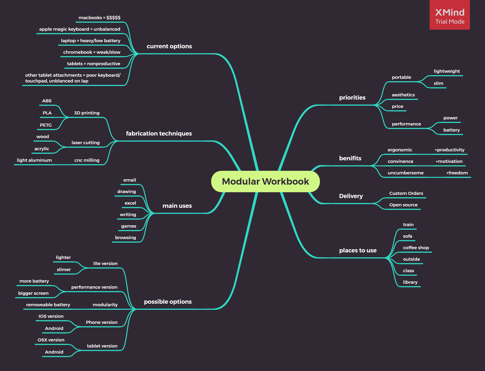
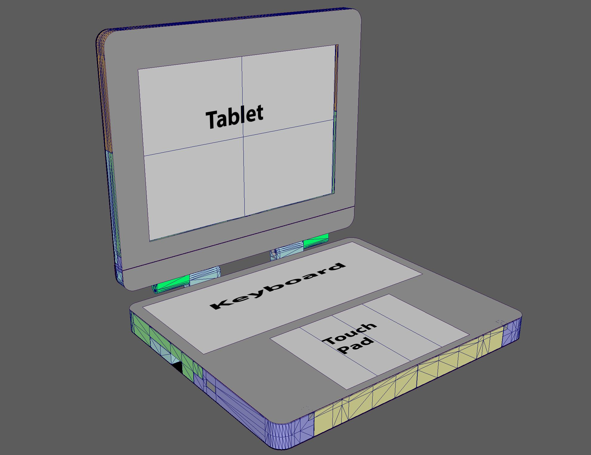
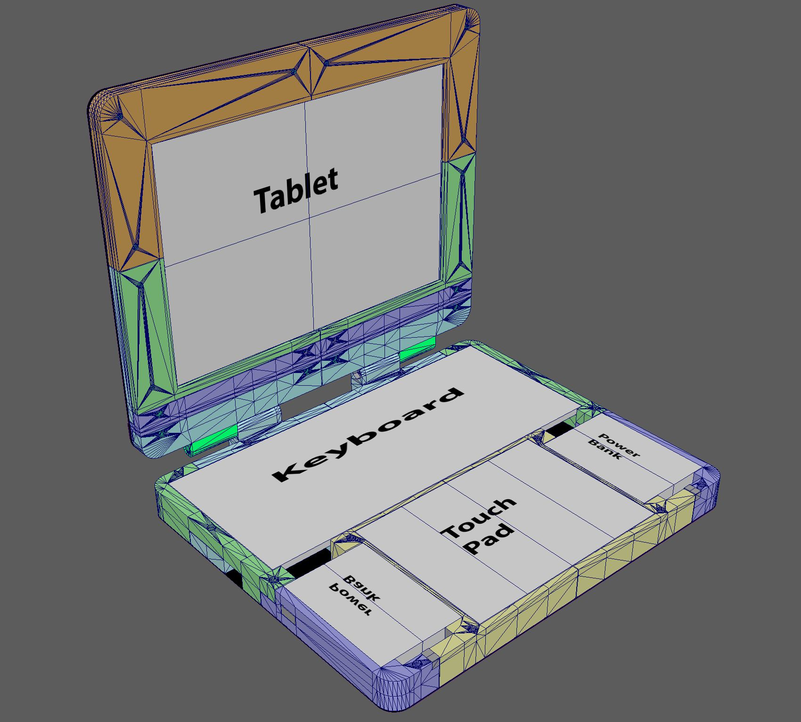
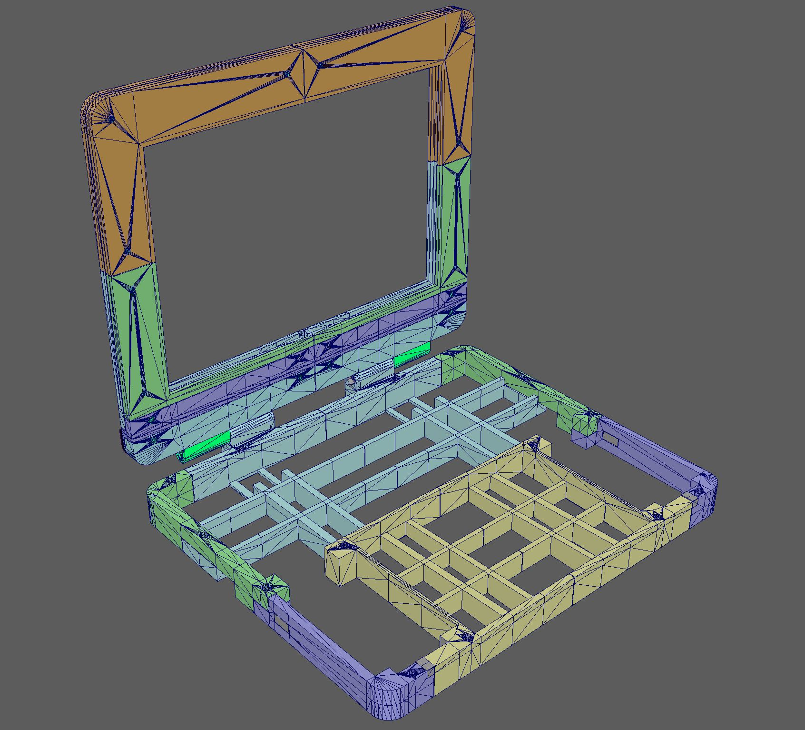
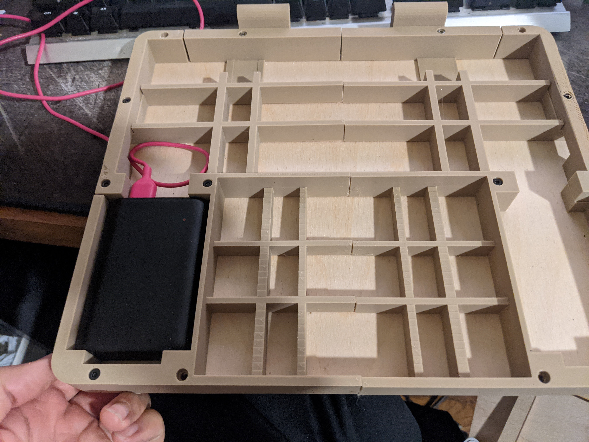
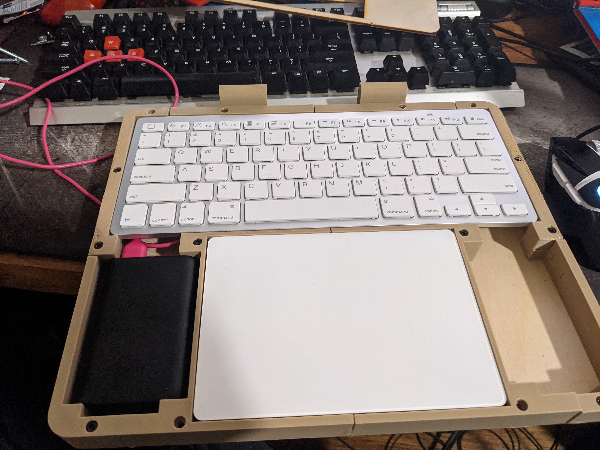
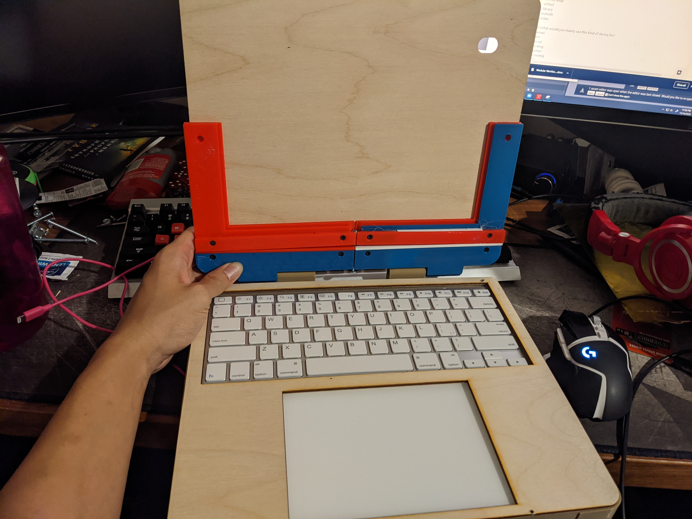
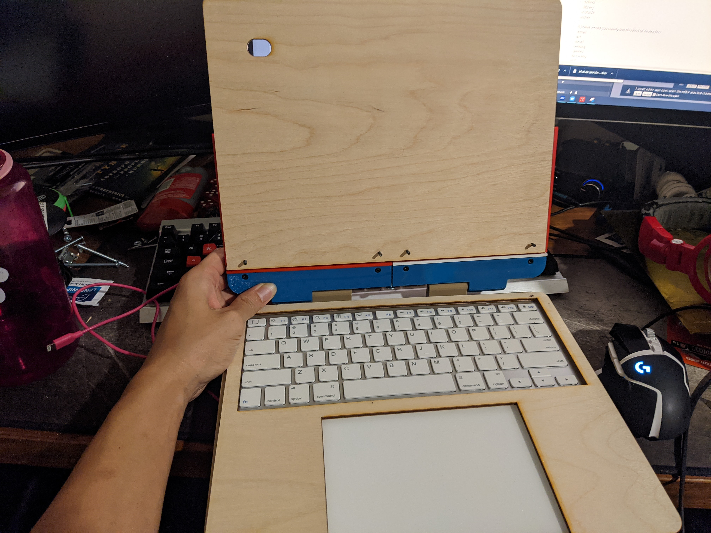
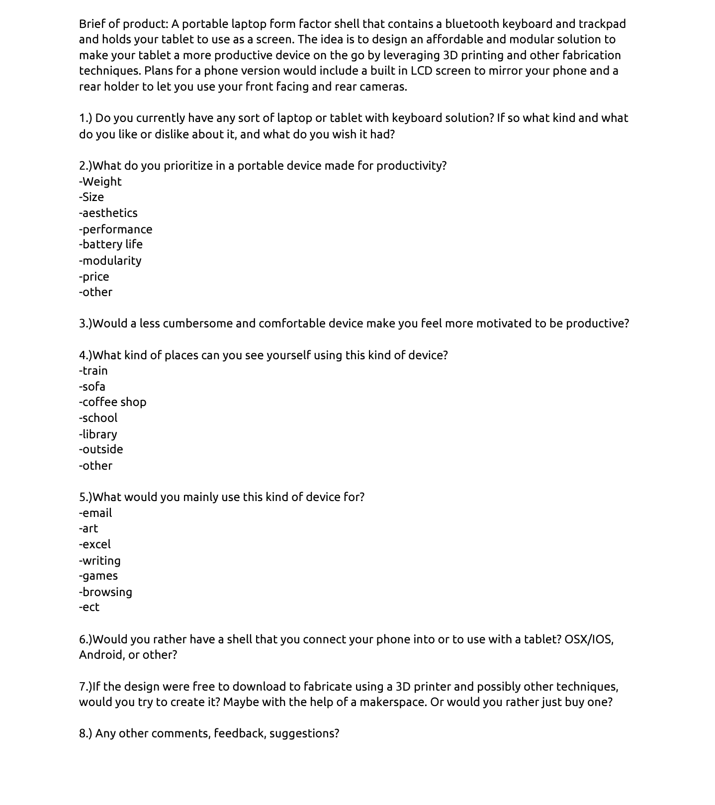

Ideation & Prototyping Week 10
Research for Design #1
So my tentative idea right now is proposing to use these methodologies to improve on an ongoing project I currently have called “Modular Workbook”. Earlier this semester I entered myself into the maker space intrapreneurial fund with this idea, was awarded my requested fund, and have been chipping away at it since.  Brief of product: A portable laptop form factor shell that contains a Bluetooth keyboard and trackpad and holds your tablet to use as a screen. The idea is to design an affordable and modular solution to make your tablet a more productive device on the go by leveraging 3D printing and other fabrication techniques. Plans for a phone version would include a built-in LCD screen to mirror your phone and a rear holder to let you use your front-facing and rear cameras.  When I found out that I’d be going into the city a few times a week after I got accepted into grad school, I looked around for some possible devices to use. My current Macbook from undergrad is cool and all, but it is starting to show its age especially with its battery life. I don’t quite need the power of my laptop to do most things in classes which is pretty much just notetaking and video conferencing.  The perfect solution would be to have a lightweight notebook that I wouldn’t have to plug into a power source and convenient enough where I wouldn’t mind taking out on my train ride into the city. I have an old Chromebook that turns out to be way too slow so that was out of the question, it didn’t quite have that snappiness and especially the trackpad that my MacBook Pro had. Looking for a more current and lighter version of what I have, I was looking at least 1K for a low spec MacBook air which I wasn’t too crazy about.  With the newish iPadOS, I thought maybe just a nice tablet would work out. Maybe one with a nice keyboard and trackpad case. The closest thing I found was a ton of cheap-looking keyboards without trackpads or ones with trackpads but would need a steady table to sit on as the apple magic keyboard for iPad Pro. I think designers assume people will pick their hands up from their keyboards to touch their tablet and won’t need a trackpad. What I was looking for was a real clamshell form factor that I can balance wherever I went.  If only I could use a nice lightweight and low battery usage tablet with a nice apple trackpad. That’s when it dawned on me that I could get Apple’s overpriced magic trackpad ($90) a Bluetooth keyboard, and pair it up with an iPad. I just needed something to hold it all together. I’ve been making some cool inventions here and there using my 3D printer and other cool hardware for a while now so I figured I should try. When I proposed this idea and won the funding, it gave me the drive I needed to follow through with the plan.  I’ve been met with the prototyping group a few times so far and picked up some nice tips and support. I’ve also been spending some time at the maker space learning how to laser cut to make a rough prototype of my design. With a lot of trial and error, I’ve learned a lot about the manufacturing process and what people want in this sort of product. One person immediately told me that it was too heavy, while another didn’t mind the weight since they would carry around a battery pack either way.  I’m currently contacting multiple other people with feedback and questions to gather additional feedback. According to the one business professor, I’m using research through a design approach starting in the middle. If I can use this time to use the design principles to further understand and refine my product and get more feedback I think I could come out with a pretty nice finished project.  Here are some questions I sent out to some of the people I've shown this to so far, feel fee to send me feedback too if you'd like! 
home
while (!deck.isInOrder()) {
print 'Iteration ' + i;
deck.shuffle();
i++;
}
print 'It took ' + i + ' iterations to sort the deck.';